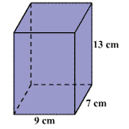
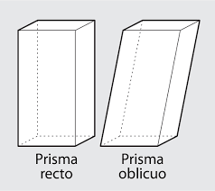
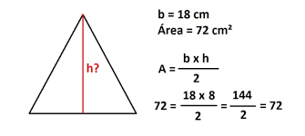
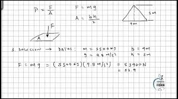
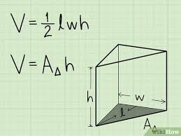

El volumen de un prisma se define como el espacio tridimensional que ocupa. Se calcula multiplicando el área de la base por la altura del prisma. Este concepto es esencial para comprender los fundamentos de la geometría espacial y tiene aplicaciones en varios campos.
Los prismas se pueden clasificar en dos tipos principales: prismas rectos y prismas oblicuos. Los prismas rectos tienen caras laterales perpendiculares a las bases, mientras que en los prismas oblicuos, las caras laterales no son perpendiculares a las bases.
El cálculo del volumen de un prisma implica considerar el área de la base y la altura. El área de la base depende de la forma geométrica de la base del prisma, y la altura se mide perpendicularmente desde una base a la otra. Comprender esta relación es clave para calcular el volumen de manera precisa
Resolver problemas prácticos que involucran el cálculo del volumen de prismas es fundamental para comprender su aplicación en situaciones del mundo real. Estos ejercicios ayudan a afianzar los conceptos aprendidos y a desarrollar habilidades de resolución de problemas en geometría espacial.
El estudio de teoremas relacionados, como el teorema de Cavalieri, proporciona una comprensión más profunda de los fundamentos detrás del cálculo del volumen de prismas. Estos teoremas ayudan a simplificar el cálculo del volumen en casos específicos y establecen relaciones entre diferentes formas geométricas.
Explorar extensiones y aplicaciones avanzadas del cálculo del volumen de prismas es fundamental para comprender su utilidad en campos como la arquitectura, la ingeniería y la fabricación. Estudiar prismas con bases no regulares y prismas de sección variable amplía el alcance de la aplicación del concepto de volumen de prismas en contextos más complejos.